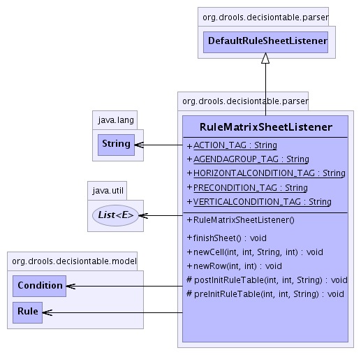

org.drools.decisiontable.parser
Class RuleMatrixSheetListener
java.lang.Object
 org.drools.decisiontable.parser.DefaultRuleSheetListener
org.drools.decisiontable.parser.RuleMatrixSheetListener
org.drools.decisiontable.parser.DefaultRuleSheetListener
org.drools.decisiontable.parser.RuleMatrixSheetListener
- All Implemented Interfaces:
- RuleSheetListener, SheetListener
public class RuleMatrixSheetListener
- extends DefaultRuleSheetListener
-
- 
|
Method Summary |
void |
finishSheet()
Come to the end of the sheet. |
void |
newCell(int row,
int column,
java.lang.String value,
int mergedColStart)
Enter a new cell. |
void |
newRow(int rowNumber,
int columns)
Enter a new row. |
protected void |
postInitRuleTable(int row,
int column,
java.lang.String value)
Called after rule table initialisation. |
protected void |
preInitRuleTable(int row,
int column,
java.lang.String value)
This gets called each time a "new" rule table is found. |
| Methods inherited from class java.lang.Object |
clone, equals, finalize, getClass, hashCode, notify, notifyAll, toString, wait, wait, wait |
AGENDAGROUP_TAG
public static final java.lang.String AGENDAGROUP_TAG
- See Also:
- Constant Field Values
PRECONDITION_TAG
public static final java.lang.String PRECONDITION_TAG
- See Also:
- Constant Field Values
ACTION_TAG
public static final java.lang.String ACTION_TAG
- See Also:
- Constant Field Values
HORIZONTALCONDITION_TAG
public static final java.lang.String HORIZONTALCONDITION_TAG
- See Also:
- Constant Field Values
VERTICALCONDITION_TAG
public static final java.lang.String VERTICALCONDITION_TAG
- See Also:
- Constant Field Values
RuleMatrixSheetListener
public RuleMatrixSheetListener()
newCell
public void newCell(int row,
int column,
java.lang.String value,
int mergedColStart)
- Description copied from interface:
SheetListener
- Enter a new cell.
Do NOT call this event for trailling cells at the end of the line.
It will just confuse the parser. If all the trailing cells are empty, just
stop raising events.
- Specified by:
newCell in interface SheetListener- Overrides:
newCell in class DefaultRuleSheetListener
- Parameters:
row - the row numbercolumn - the column alpha character labelvalue - the string value of the cell
newRow
public void newRow(int rowNumber,
int columns)
- Description copied from interface:
SheetListener
- Enter a new row.
- Specified by:
newRow in interface SheetListener- Overrides:
newRow in class DefaultRuleSheetListener
finishSheet
public void finishSheet()
- Description copied from interface:
SheetListener
- Come to the end of the sheet.
- Specified by:
finishSheet in interface SheetListener- Overrides:
finishSheet in class DefaultRuleSheetListener
postInitRuleTable
protected void postInitRuleTable(int row,
int column,
java.lang.String value)
- Description copied from class:
DefaultRuleSheetListener
- Called after rule table initialisation. Subclasses may
override this method to do additional processing.
- Overrides:
postInitRuleTable in class DefaultRuleSheetListener
preInitRuleTable
protected void preInitRuleTable(int row,
int column,
java.lang.String value)
- This gets called each time a "new" rule table is found.
- Overrides:
preInitRuleTable in class DefaultRuleSheetListener